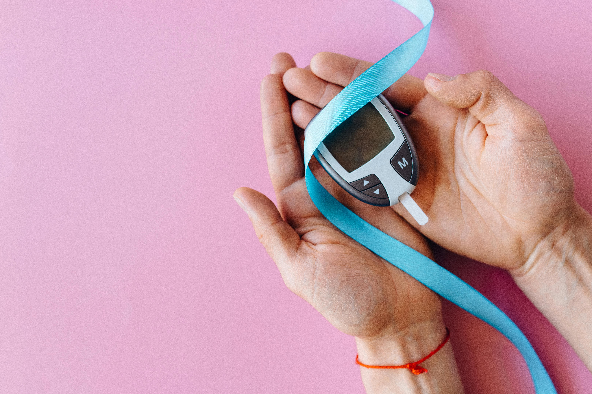

¿Qué es la diabetes?
La diabetes es una enfermedad crónica que se origina cuando el páncreas no produce suficiente insulina o cuando el cuerpo no puede utilizar eficazmente la insulina que produce. La insulina es una hormona que regula el azúcar en la sangre. El efecto de la diabetes no controlada es la hiperglucemia (aumento del azúcar en la sangre), que con el tiempo daña gravemente muchos órganos y sistemas, especialmente los nervios y los vasos sanguíneos.
Este gráfico muestra la frecuencia con la que las personas consumen alimentos procesados según una encuesta realizada a 53 participantes.

Diabetes tipo 1 y tipo 2
Existen diferentes tipos de diabetes, pero los más comunes son la diabetes tipo 1 y la tipo 2. Ambas requieren de atención y cuidados especiales para mantener el control de los niveles de azúcar en la sangre.

Síntomas de la diabetes
Los síntomas pueden incluir aumento de la sed, micción frecuente, visión borrosa, fatiga, entre otros. Es importante reconocer estos signos y consultar con un médico para obtener un diagnóstico adecuado.
Factores de riesgo para la diabetes
Los factores de riesgo para la diabetes incluyen la obesidad, la falta de actividad física, la predisposición genética y los antecedentes familiares de diabetes, entre otros. Es importante mantener un peso saludable, llevar una dieta equilibrada y realizar actividad física regularmente para reducir el riesgo de desarrollar diabetes tipo 2.
Este gráfico muestra la frecuencia con la que las personas consumen alimentos altos en azúcar y grasas según una encuesta realizada a 53 participantes.
Complicaciones de la diabetes
La diabetes no controlada puede llevar a complicaciones graves como enfermedades cardiovasculares, daño renal, neuropatía (daño nervioso), entre otras. Es crucial mantener un tratamiento adecuado y llevar un estilo de vida saludable para prevenir estas complicaciones.
Prevención y control
Adoptar hábitos de vida saludables como una alimentación equilibrada, actividad física regular y control periódico de los niveles de azúcar en la sangre son fundamentales para prevenir la diabetes o controlarla en quienes ya la padecen.
Alimentación saludable para prevenir la diabetes
Una alimentación saludable y equilibrada es fundamental para prevenir la diabetes y mantener un control adecuado en quienes ya la padecen. Se recomienda reducir el consumo de azúcares añadidos, grasas saturadas y alimentos procesados, y aumentar el consumo de frutas, verduras, legumbres y alimentos integrales.